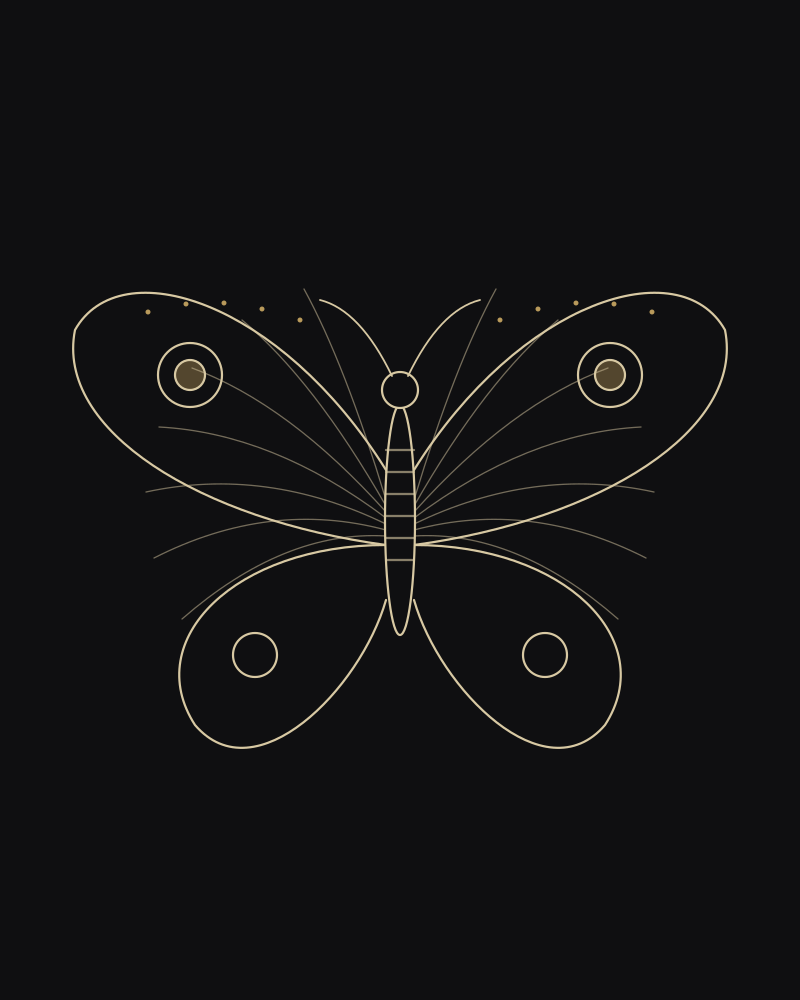

МастерДисциплина.
Дисциплина.
Линия. Результат.
Более десяти лет работаю с кожей как с материалом, который прощает не всё. Каждый эскиз создаётся под конкретного человека и конкретную зону тела.
Не делаю по шаблонам и не обещаю невозможного. Если идею лучше изменить, скажу об этом сразу.

10+
лет опыта
1500+
завершённых работ
70%
клиентов возвращаются
4,9
средняя оценка
Процесс
Четыре этапа
01
Консультация
Идея, референсы, зона, размер.
02
Эскиз
Рисую вручную, правим до результата.
03
Сеанс
Комфортно, без спешки, с перерывами.
04
Заживление
Памятка и поддержка на связи.
Гигиена
Стерильно. Без исключений.
Одноразовое
Иглы, картриджи и защитные плёнки открываются при вас.
Стерилизация
Инструменты проходят обработку и хранятся в крафт-пакетах.
Чистое место
Поверхности обрабатываются перед каждым клиентом.